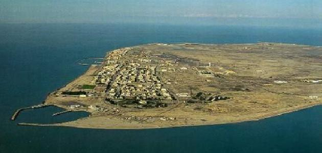
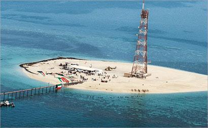

جزيرة فيلكا
جزيرة فيلكا هي واحدة من الجزر الكويتيّة التي تعتبر محطّة تجارية هامّة جداً تقع على الطريق البحري الذي يصل بين حضارات بلاد ما بين النهرين، واسمها مأخوذ من اللفظ الإغريقي فيلاكيو ومعناه نقطة تمركّز، كما كانت الجزيرة من أهمّ المراكز الدينية في العصور القديمة، وتقسم إدارياً إلى العديد من القرى كقرية منطقة القصور الواقعة في وسطها، وقرية سعيدة الواقعة في الجهة الشمالية الغربية منها، وقرية الدشت الواقعة في الجهة الشماليّة الشرقية منها، وقرية القرينية المطلّة على البحر، وقرية الزور، وقرية الصباحيّة التي تمتاز بآبار المياه العذبة وأشجار النخيل
معلومات عن جزيرة فيلكا
تحتوي الجزيرة على عدد من المعالم السياحيّة كمزار الخضر، وموقع القرنيّة، ومنطقة سعد وسعيد.
على مرّ التاريخ حُكمت الجزيرة من قبل العديد من الحكام كسعود عبد الله الصباح، وجابر بن عبد الله بن صباح الصباح، ومحمد سعود الصباح، وعبد الله سعود الصباح، وأحمد علي الخلف، وخلف أحمد الخلف، وخلف الخلف.
يوجد العديد من الكتب التي تحدثت عن الجزيرة منها: صور من الحياة القديمة في جزيرة فيلكا، وجزيرة فيلكا خريطة تاريخيّة، وجزيرة فيلكا صفحات من الماضي، وجزيرة فيلكا أشهر الجزر الكويتيّة تاريخها وتراثها، ومن ذكريات التعليم في جزيرة فيلكا من 1937م وحتى 1963.
